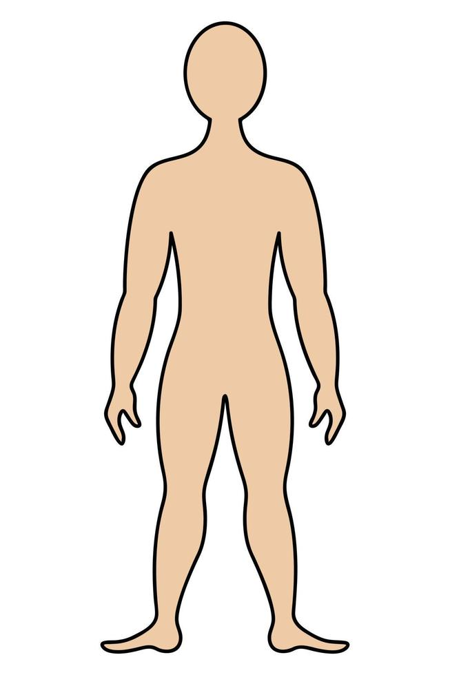

Medicamentos y Usos Comunes
| Medicamento | Uso Común | Dosis Recomendada | Efectos Secundarios | Vía de Administración |
|---|---|---|---|---|
| Ibuprofeno | Dolor e inflamación | 200-400 mg cada 6 hrs | Náuseas, dolor de estómago | Oral |
| Paracetamol | Dolor leve o fiebre | 500-1000 mg cada 6 hrs | Daño hepático en altas dosis | Oral |
| Nolotil | Dolor agudo y fiebre alta | 575-1000 mg cada 6-8 hrs | Reacciones alérgicas graves, agranulocitosis | Oral o Intravenosa |
| Loratadina | Alergias | 10 mg una vez al día | Somnolencia, sequedad de boca | Oral |
| Metformina | Diabetes tipo 2 | 500-850 mg 2-3 veces al día | Malestar gastrointestinal, acidosis láctica | Oral |
Imagen Interactiva
Seleccione la parte del cuepo en la que presenta dolor para ver algunas recomendaciones y tratamiento.
